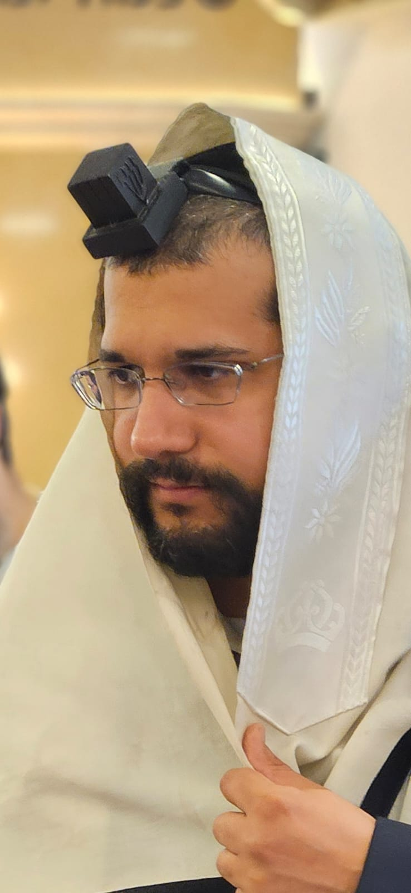

בס"ד
דף הבית
מצא סיפור
רשימת סיפורים
שתף סיפור
הינוקא הקדוש

לחץ כאן - כדי להפעיל ניגונים של הינוקא
עבור מנגינה
יצירת קשר
מצא סיפור
חפש
רשימת סיפורים
נס החזרה לחיים
הילד פתאום התחיל לדבר
נס יום אחרי שהייתי אצל הרב
נס החזרה לחיים
שתף סיפור
שלח סיפור לאישור
כותרת הסיפור
תיאור הסיפור...
חזרה לרשימת הסיפורים
יצירת קשר
שם: אביחיל חיים דוויק
מייל:
zickuyharabim@gmail.com